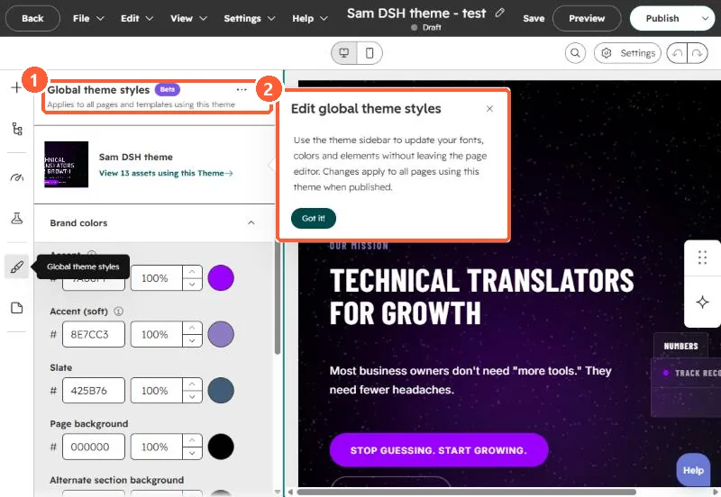
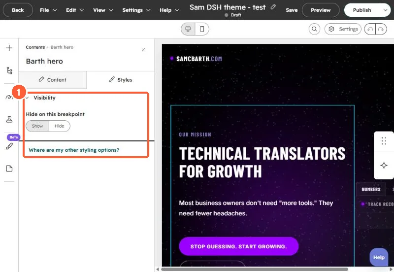

Short answer
Theme fonts apply to every page using the theme, so they cannot answer "make this heading bigger on this page." Font fields in a module can. On our landing page theme I added a Fonts group to the Styles tab of all eight modules, one font field per text element, and rendered each one as an inline style on that element. Size goes through a CSS variable with one !important rule, which also lets a media query scale it down on phones.
1. Theme fonts versus module fonts
Theme styles are global. HubSpot's own panel says changes there apply to all pages using the theme when published. A module with no style fields only offers visibility on its Styles tab.




2. The fields
HubSpot's font field gives editors size, color, font family and bold, italic and underline. Font family needs both font and font_set. I added one per text element, in a group on the STYLE tab:
{
"name": "fonts", "label": "Fonts", "type": "group", "tab": "STYLE",
"children": [
{ "name": "heading", "label": "Heading", "type": "font",
"load_external_fonts": true,
"default": { "font": "Cormorant Garamond", "font_set": "GOOGLE",
"fallback": "serif", "size": 104, "size_unit": "px",
"variant": "500", "styles": { "font-weight": "500" } } },
{ "name": "body_font", "label": "Body", "type": "font", "...": "..." }
]
}3. Render them so they win
A macro turns each font field into an inline style. Size is passed as a variable and flagged with an attribute:
{% macro ff(x) %}{% if x.size %} data-f{% endif %} style="
{%- if x.size %}--fs:{{ x.size }}{{ x.size_unit or 'px' }};{% endif -%}
{%- if x.font %}font-family:'{{ x.font }}'{% if x.fallback %}, {{ x.fallback }}{% endif %};{% endif -%}
{%- if x.color %}color:{{ x.color }};{% endif -%}
{%- for k, v in x.styles.items() %}{{ k }}:{{ v }};{% endfor %}"{% endmacro %}
<h1 class="heading"{{ ff(module.fonts.heading) }}>{{ module.heading }}</h1>Then one stylesheet rule applies the size, and a media query scales it on phones:
[data-f] { font-size: var(--fs) !important; }
@media (max-width: 860px) {
[data-f] { font-size: min(var(--fs), calc(var(--fs) * .6 + 14px)) !important; }
}Without the variable, an inline font-size would beat the stylesheet on desktop but also block any mobile rule. With it, a 104px heading still shrinks on a phone.
4. Things to know
- Set
load_external_fontsto false if the template already loads the font, so it does not load twice. - HubSpot notes that hiding a font subfield with
visibilitydoes not stop its CSS from being output in the field's styles. - Keep the defaults equal to the theme's fonts, so a page looks the same until someone changes it.